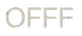

May 8—10, 2025
Disseny Hub Barcelona
Tickets on saleOFFF Festival
Zelig
Explore the power of sound with Zelig Sound, a creative studio mastering the art of sonic storytelling. With a blend of innovation and emotion, they elevate sound design to new heights. Their talk at the OFFF festival in Barcelona captivated and inspired, delving into the essence of sound and how it transforms the experience of visual media. Discover for yourself how Zelig Sound pushes the boundaries of sound expertise, taking you on a journey through the sonic realm of emotion, imagination, and creativity.